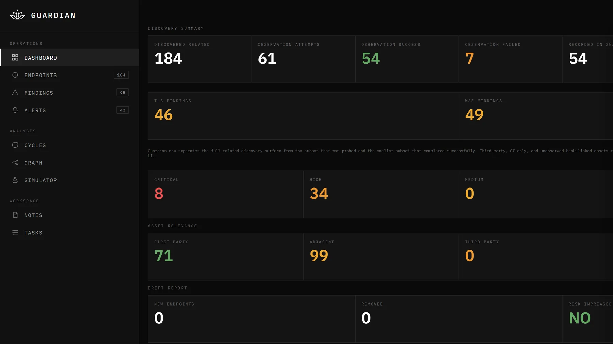
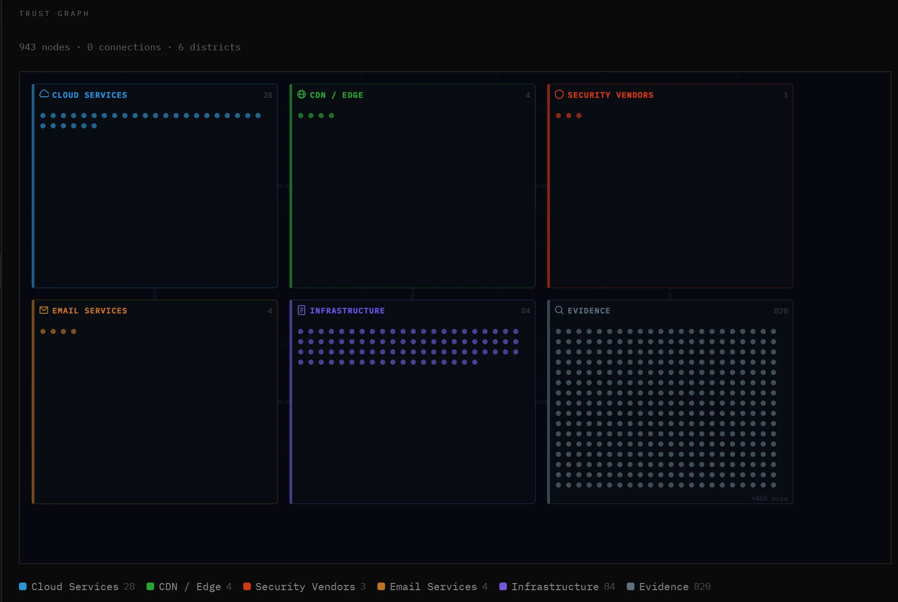
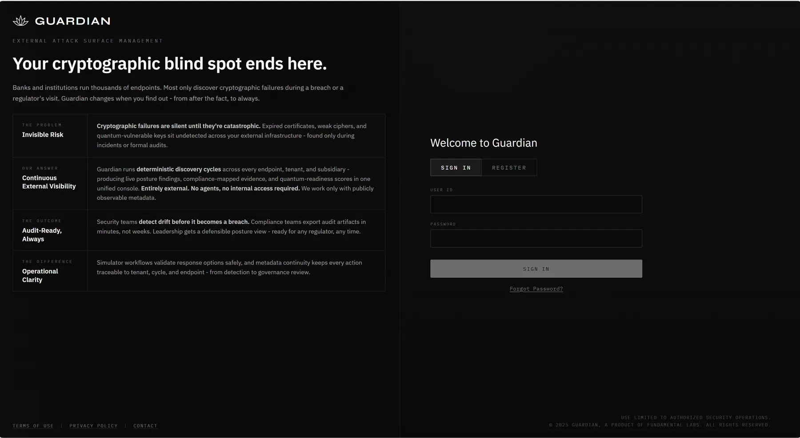

Guardian
External attack-surface intelligence for banks — see your infrastructure the way an attacker does, and find the weak points first.
- Role
- Sole technical founder, Fundamental Labs
- Timeline
- Oct 2025 – 2026
- Stack
- Python 3.12 · PostgreSQL · React · TypeScript
- Shown at
- IDBI Innovate 2026
IDBI Bank hackathon
Screenshots



01The problem
Banks run thousands of internet-facing endpoints — websites, APIs, mail servers, CDN edges, cloud buckets — and they change every week. Most institutions only discover an expired certificate, a weak cipher or a forgotten subdomain during a breach or an audit.
- Forgotten systems stay exposed long after anyone remembers them.
- Cryptographic weaknesses fail silently — and quantum-vulnerable keys mean today’s traffic can be decrypted later.
- Hidden trust relationships let one weak system compromise others that look healthy.
- Scanners give snapshots, not history, so nobody can say what changed or whether risk is rising.
02What I built
From a single seed domain, Guardian does what an attacker’s reconnaissance would — but deterministically and without payloads or login attempts. It discovers the estate, fingerprints every endpoint at protocol level, builds a trust graph, detects weaknesses, predicts which will escalate, and gives analysts a console with an attack simulator.
Discovery (left) feeds an analytical stack (right) that only depends downward. Swap PostgreSQL for the filesystem store with one environment variable.
The six layers
- Observation: DNS, TCP, TLS and HTTP measurements turned into 24 fingerprints and 10 “physics” signals such as drift and jitter.
- Trust graph: endpoints, identities, certificates and evidence linked by 11 relationship types.
- Weakness detection: six detectors fused into clusters like “negotiation disruption”.
- Prediction & memory: per-endpoint learning state with predictions up to 90 days out.
- Decision: an 8-phase campaign model (stable → recon → probe → escalation…) with hysteresis so alerts don’t flap.
- Interface: a React console with dashboards, endpoint drill-downs, the trust graph and an attack simulator.
Key engineering decisions
- Determinism: same input, same output — even retry jitter comes from a hash — so auditors can replay any finding.
- Explore, then exploit: every discovery module gets a 30-second slice; only productive ones get more time, with hard caps on graph size.
- Observe, never attack: no payloads, no authentication attempts; findings are written in defensive language for a bank’s governance review.
- Tiny supply chain: standard-library Python plus three dependencies — less to audit, less to break.
- Compliance mapping: TLS, certificate, WAF and post-quantum findings mapped to PCI-DSS v4.0, RBI guidance and NIST IR 8413.
03Tech stack
| Backend | Python 3.12 (stdlib-first), gunicorn, PostgreSQL (17 tables) or an atomic filesystem store |
|---|---|
| Frontend | React 18, TypeScript, Vite, Zustand, Tailwind — 21 analyst pages |
| Infrastructure | Docker, Render, Vercel |
| Quality | 271 tests including determinism suites · ~71K lines of Python |
04Impact
- One demonstration cycle from a single seed domain found 184 related assets, made 54 of 61 protocol observations, raised 46 TLS findings and flagged 8 critical — in 6 minutes 43 seconds.
- Larger estates map 500+ endpoints in about 10 minutes — work that takes a security team hours to days by hand.
- Presented at IDBI Innovate 2026 as a working product, not a concept.
- Business development automated with an outreach agent that sourced 2,000+ leads and sent up to 200 personalised e-mails a day.
05What I learned
- For a bank, “boring, repeatable and auditable” beats clever. Determinism became a feature I could sell.
- Good visual metaphors matter: showing the trust graph as a city made a 900-node graph readable for analysts.
- Guardian observes only public metadata and is designed for authorised assessments of an organisation’s own estate. Screens on this page have identifying details removed.